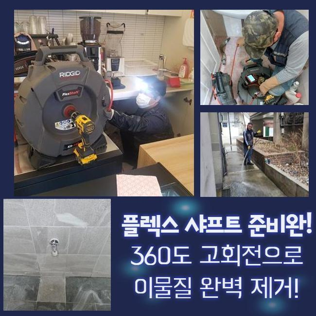
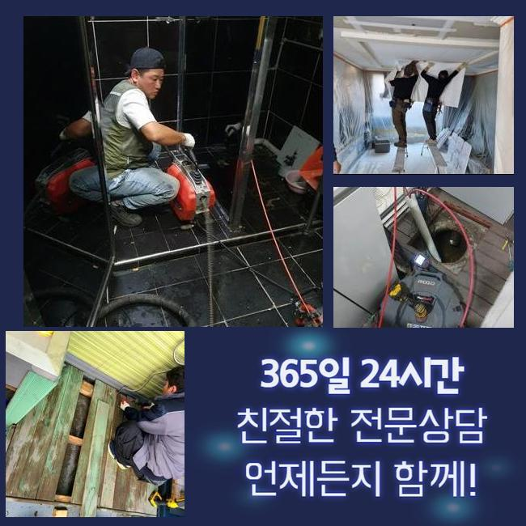
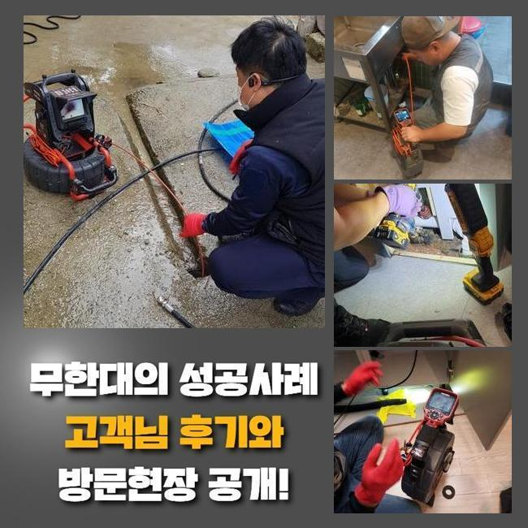
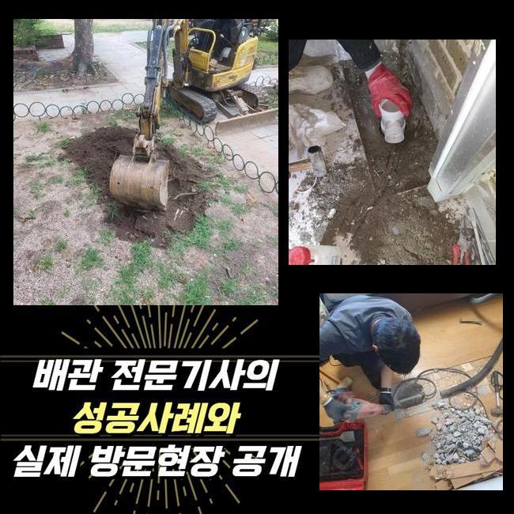
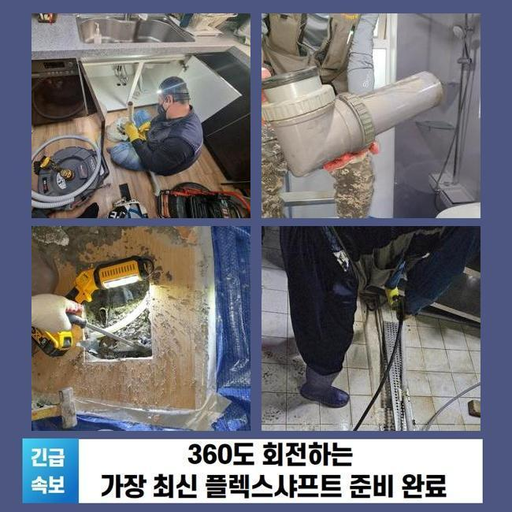
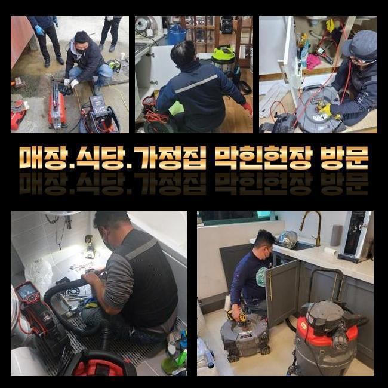

🏠 용인 서농동세탁기배수구막힘 마북동 악취차단 출장설비
용인 싱크대막힘 전문 시공 후기

📋 작업 개요
- 위치: 용인
- 서비스 유형: 싱크대막힘, 하수구막힘, 배관막힘, 역류해결, 뚫는업체, 고압세척, 악취차단
- 작업 일시: 2025. 1. 18. 3:41
- 업체명: 하수구수사대 (010-5615-2118)
🔍 문제 상황
용인 서농동세탁기배수구막힘 마북동 악취차단 출장설비
금일엔 상가내부의 씽크대에서 발생된 배수장애를 바로잡은 현장을 소개할 예정이에요
이해하기 쉽고 실용적인 내용들이 가득하므로 주목해주세요!
오피스라는 장소에서 야기된 일이다 보니 나름의 개선책으로 해결하려는 시도도 보였는데요
전문가들은 작업방식들을 어떠한 절차로 수행하는지 더불어 각 관로들을 관리하는 꿀팁도 어렵지않게 설명드려볼게요
고객께선 근무하실때 조리를 하는 현장이 아니므로 물이 안내려가는 불상사가 나타날줄은 꿈에도 몰랐다고 말씀하셨습니다
해당 현장은 식자재를 쓰지 않는 장소라서 주기성을 갖춘 관리들이 이뤄지지않는 현장이 많아요
저희의 전문가들은 기기들을 준비해 출동했죠 현장도달 후 하수관을 확인했는데요
구석구석 관찰하니 물들이 솟구치는 문제들은 관찰되지않았지만 아주 조금씩 내려가고 있었어요
이러한 시기에는 예기치못하게 압이 올라가고 역류되는 문제들이 나타날 가능성이 높습니다

🔎 원인 분석
💡 전문가 진단: 정밀 진단 장비를 사용하여 슬러지의 고착 여부를 판명하고 타격/세척 작업을 실시했습니다.
그리하여 석션기계로 일컫는 장비를 꺼내 떠다니는 하수들을 흡입시켰어요
석션도구는 점검을 해주기 이전에 선명한 송출을 위해서 사용되고 작은 잔재들을 제거할때 효과좋은 성능을 보입니다
흡입기통에 오수들이 빠져나왔으나 배수구로 느린속도로 흐르는 상태였습니다
석션기 사용 이후 절차로는 내시경도구로 깊숙한 부분도 체크했죠
내시경 라인을 투입시키니 기름들이 축적되어 통수공간들이 좁혀진 상황이였습니다
요리들을 안하는 장소인데 어떠한 원인으로 축적되었나 의문이 들 수 있겠으나 사무공간에서는 주기성을 갖춘 세척들이 결여되는 곳이 많죠
일단은 주전부리 및 커피 잔해물 기름성분이 흡착되어 고착물을 만들어내요
내시경기기로 하수도를 관찰하며 샤프트기기로 기름성분을 타겟으로 해 점차 각 관로들을 세척하니 공간이 생기며 통로들이 넓어지게 되었습니다
기름의 잔재들은 관찰 시에 빨간색을 띄므로 이물이 제거된다면 영상화면도 선명하게 탈바꿈되는것을 목격하게 된답니다
샤프트작업을 했음에도 물이 배수구로 제대로 안빠지는 문제들이 남아있었습니다
그리하여 대량의 물들을 테스트 삼아 흘려보내니 어떤곳인지 고이면서 막혀버리는 문제들이 있었습니다

🔧 작업 과정
물들이 흐름이 원천중단되었단건 놓치게된 요소들이 남아있단 신호탄이죠
슬러지말고도 여타 트리거들이 남아있단 걸 뜻하므로 집수시설까지 점검할 필요들이 있었는데요
저희의전문가는 만성적인 개수대 트러블의 이유를 특정시키고자 내시경케이블을 수직배관 끝까지 넣어주었어요
끝내 알게된것은 배수라인의 모서리쪽이 하단부에 들어간 상태가 아닌 바깥부분으로 노출되서 자리했다라는 사실이었는데요
실내부터 내시경장치로 확인해주는게 쉽지않아 발걸음을 돌려 반대로 기기들을 사용하도록 구멍들을 뚫은뒤 그 부위에 내시경 내시경 라인을 삽입했죠
내시경케이블을 넣어보니 이물질로 문제들을 발견했습니다
탕비실라인에서는 원래의 배수관이 붙어있는 모습이 아니였고 다른 배수관이 외측으로 이어져있는 모습이였습니다
해당 떡하니 따라가니 세면대배수관에 형체를 알 수 없는 것이 하수관을 막아서고 있었어요
씽크대라인의 하수관이 아니라 예측하기 힘든 위치에 폐기물이 존재해서 인지하기까지 오래걸렸으나 결국 오랫동안 이어진 배수관의 주된 까닭들을 찾았죠
수회에 걸쳐 위치들을 검수하고 점검해야하는 지점의 라인을 타공하여 이물들을 꺼내주었어요
이물의 경우 라운드 형태의 고무같은것이였는데 어떻게 이용됐는지 파악이 안됐지만 크기도했고 중간에 자리잡았을 때라면 통수되는것이 불가능에 가까운 이물질이였습니다
주방쪽의 배관과 함께 배수장애를 불러일으키는 이물질들도 없애주는 수순을 진행했더니 흐름들이 제 모습을 되찾았고 바로잡는 단계가 끝났어요
그리고 의뢰인분은 냄새나는 것에도 문의하셨어요 작업하면서 확인했지만 냄새까지 생기게 된것도 확인했죠
트랩부분에 균열들이 남아있었습니다 배수관부터 마무리를 하고서 새로운 트랩부품으로 교체도 이상없이 해드렸습니다
마지막 체크를 위해서 탕비실내부의 개수대에 수도를 틀어 잘 내려가는지 보았더니 언제 그랬냐는 듯 별다른 문제없이 흘러갔어요
오늘의 통수가 안되는 트러블도 여지없이 수습되었어요


✅ 작업 완료
정확한 검수를 거쳐 마침내 문제의 까닭들을 추적하여 결국 막힌 연유를 발견했으며 개수대의 이용까지도 가능하게되었어요
위같이 의뢰인분이 장기적으로 고생하시지않게 모든 과정을 완료했답니다
사용하실때 수채구멍으로 오일들과 찌꺼기들이 안빠지게 관리하는것이 좋고 점검도 정기적으로 해주면 좋겠죠?
저희업체는 재발걱정을 하지않을 수 있는 시공에 몰두합니다 이에 작업하면서 저희들이 왔다간 후 수리한 부분에서 또 같은 증세가 야기되면 금방 달려가 as들도 지원합니다
통수가 안되는 사태가 벌어져 전문진의 출장을 염두에 두고 계시면 저희의 전문가들에게 연락하시는건 어떠십니까?



⚠️ 주방 싱크대 배관 막힘 예방 수칙
- ✅ 기름기가 묻은 식기나 프라이팬은 설거지 전 키친타올로 반드시 기름때를 닦아내세요.
- ✅ 주기적으로 싱크대 개수대에 뜨거운 물을 가득 받아 한 번에 내려 배관 내부 기름을 씻어내세요.
- ✅ 배수구 거름망을 미세한 필터로 사용하시고 음식물 찌꺼기가 틈으로 새어 들지 않게 관리하세요.
- ✅ 베이킹소다와 식초를 뜨거운 물과 함께 일주일에 한 번씩 부어주면 배관 살균과 막힘 예방에 좋습니다.
💡 핵심 정리
- 확실한 장비 작업(내시경 점검 및 샤프트 스케일링)으로 원인을 뿌리 뽑습니다.
- 작업 후 1년 이내에 동일한 부위 재발 시 100% 무상 A/S 서비스를 보장합니다.
- 서울 · 경기 · 인천 전 지역에 24시간 언제든 긴급 출동할 수 있도록 항시 대기 중입니다.
❓ 자주 묻는 질문 (FAQ)
🚨 용인 싱크대막힘 문제로 고민이신가요?
정확한 원인 진단과 확실한 시공으로 재발 없는 해결을 약속드립니다.
24시간 긴급 출동 | 서울 · 경기 · 인천 전지역 | 1년 내 재발 시 무상 A/S